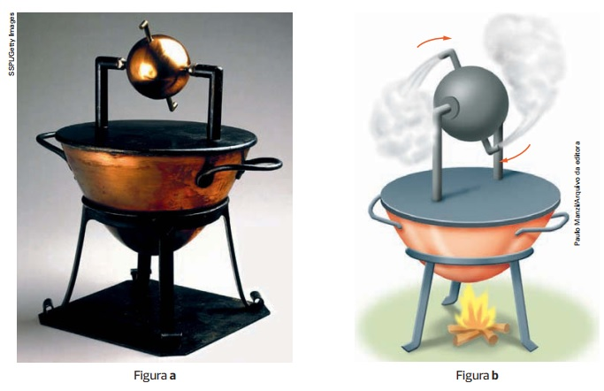
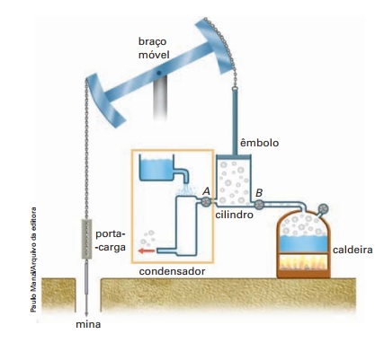
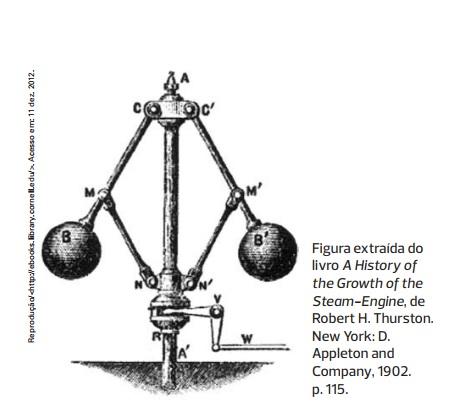

Primeira lei da Termodinâmica
Esta gravura mostra uma das primeiras locomotivas a vapor, construída em 1837 para operar na Great Western Railway (GWR), ferrovia inglesa que começou a ser construída em 1833 para ligar Londres ao sudoeste e oeste da Inglaterra e grande parte do País de Gales. Seus trens começaram a circular em 1838, tornando realidade uma das grandes “promessas” da máquina a vapor: a mobilidade. Nessa época ainda não se compreendia bem o conceito de energia nem as leis da Termodinâmica haviam sido propostas, mas a necessidade premente de o ser humano obter novas formas de energia para a realização de trabalho —e que se intensificaria mais tarde com a Revolução Industrial — levou muitos engenheiros a criar máquinas antes mesmo de entender com clareza a fundamentação teórica de seu funcionamento. Neste página iniciamos o estudo das máquinas térmicas e dessa fundamentação que, algumas décadas depois, foi afinal estabelecida.
Introdução
As primeiras máquinas construídas pelo homem não dispensavam seu próprio esforço ou o esforço animal. Eram máquinas simples que facilitavam a realização de um trabalho essencial para a sua sobrevivência: a irrigação
A mais antiga delas foi inventada no Egito, provavelmente em 1700 a.C. (veja ilustração abaixo), conhecida no Brasil como cegonha. É uma espécie de alavanca com uma vara comprida numa extremidade onde se pendura um balde (pescoço da cegonha); na outra extremidade um contrapeso reduz o esforço do agricultor, tanto quando baixa o balde para recolher água do rio, como quando o eleva e gira a alavanca sobre o apoio para despejar a água nos canais de irrigação.
Acredita-se que no século III a.C. o físico e matemático grego Arquimedes (287 a.C.-212 a.C.), em viagem ao Egito, tenha criado lá o parafuso de Arquimedes, um engenhoso equipamento para auxiliar o trabalho dos agricultores egípcios de irrigar suas plantações. Como mostra a ilustração a seguir, uma rosca sem-fim, acionada pelo agricultor por meio de uma manivela, fazia a água subir do rio para os canais de irrigação.
“O Egito é uma dádiva do Nilo”. Esta conhecida frase escrita pelo historiador e geógrafo grego Heródoto, que viveu no século V a.C., ressalta a importância desse rio para a existência dessa extraordinária civilização. Mas a tecnologia exigida para o aproveitamento da água do Nilo deu também uma inestimável contribuição para o desenvolvimento científico e cultural do ser humano.
Alguns séculos antes, no entanto, por volta dos anos 700 a.C. ou 600 a.C., os egípcios já haviam criado uma roda para elevar a água com a energia da própria água. Desde então, a água deixou de ser apenas transportada por essas máquinas, mas passou a ser também sua força motora. Essa conquista logo chegou a outros povos, como persas, chineses, romanos e árabes, que criaram as mais variadas formas dessas rodas-d’água, algumas de grandes dimensões, como mostra a foto abaixo.

Apesar do extraordinário desenvolvimento dessas máquinas hidráulicas, elas sempre tiveram uma limitação intransponível, não só da necessidade da existência das fontes de água, mas também da necessidade de construí-las próximo a essas fontes e depender da quantidade ou intensidade do seu fluxo
Foi só a partir do século XVII de nossa era, com a compreensão de fenômenos como a pressão atmosférica e o comportamento térmico dos gases, que o homem foi capaz de desenvolver uma tecnologia — e, logo depois, uma ciência — que lhe permitiu controlar o processo de transformação da energia em trabalho, de ter controle efetivo de todo o processo produtivo — da obtenção da energia à realização do trabalho — e de intervir nesse processo
Breve história das máquinas térmicas
Desde tempos remotos, sabe-se que o calor pode produzir vapor e que o vapor pode produzir trabalho. A eolípila, inventada por Herão de Alexandria (cerca de 100 a.C.), trabalhava segundo a terceira lei de Newton, a de ação e reação: o vapor de água, ao ser expulso, fazia com que ela girasse da mesma forma que muitos irrigadores de jardim atuais. As fotos a seguir mostram três dos inúmeros inventos térmicos atribuídos a Herão de Alexandria: a foto a abaixo mostra uma reprodução atual da eolípila; o detalhe (b) é uma figura ilustrativa de seu funcionamento.
A eolípila tratava-se, porém, de um brinquedo, como outros dispositivos que, pelo que se supõe, tenham sido inventados por Herão. Um deles, menos ingênuo, abria as portas de um templo quando se ateava fogo à pira de um altar, para espanto dos fiéis. A figura c é uma reprodução desse mecanismo extraída de sua obra Pneumática (século I d.C.): o aumento da pressão do ar no recipiente sob a fornalha faz a água nele contida passar para o “balde” ao lado, que cai e movimenta o mecanismo que faz abrir as portas do templo.(Figura extraída de: THURSTON, Robert H. A History of the Growth of the Steam-Engine (Uma história do desenvolvimento da máquina a vapor). Nova York: D. Appleton and Company, 1878. p. 549 e 551.) De acordo com Robert H. Thurston, “é mais provável que os aparatos descritos [por Herão] sejam principalmente dispositivos conhecidos há muito tempo ou inventados por Ctesíbio, um inventor famoso pela quantidade e pela engenhosidade das máquinas hidráulicas e pneumáticas que planejava”.
Só no final do século XVIII, no entanto, foram inventadas as primeiras máquinas a vapor de interesse comercial e industrial. A primeira delas foi criada por Thomas Savery (1650-1715), engenheiro militar inglês, destinada a retirar água dos poços das minas de carvão. Veja abaixo o esquema que permite a descrição do seu funcionamento
Vamos supor que o vapor produzido na caldeira esteja contido no cilindro. Fecham-se as válvulas A e B e abrem-se as válvulas C e D. A água vinda do cano ligado à válvula C banha externamente o cilindro, resfriando-o. O vapor esfria e se condensa, a pressão interna do cilindro diminui, e a pressão atmosférica faz a água do poço da mina subir para o cilindro, passando pela válvula D. Fecham-se, em seguida, as válvulas D e C e abrem-se as válvulas A e B. O vapor produzido na caldeira pressiona a água contida no cilindro, elevando-a para o nível do solo. O cilindro fica sem água, mas cheio de vapor. Fecham-se as válvulas A e B, e o ciclo recomeça. A máquina de Savery era, na verdade, uma engenhosa bomba a vapor, que diminuía a pressão no interior do cilindro para puxar a água da mina por meio da ação da pressão atmosférica, e, em seguida, aumentava essa pressão interna para elevar a água ao nível externo desejado.
O grande inconveniente dessa máquina era o perigo de explosões da caldeira ou do cilindro causadas pela utilização de vapor a alta pressão. Esse inconveniente foi corrigido na máquina de outro inglês, Thomas Newcomen (1663-1729), que, além de elevar água, podia também elevar cargas. Veja as ilustrações abaixo. Elas mostram o esquema de funcionamento (a) de uma das primeiras máquinas de Newcomen, de 1705 (b)
Na máquina de Newcomen, foi introduzido um êmbolo ligado a um braço móvel — quando o vapor entra no cilindro, o êmbolo empurra o braço para cima, fazendo descer o porta carga. Quando o cilindro é resfriado, a pressão interna diminui, e a pressão atmosférica faz o êmbolo descer, elevando o porta-carga. Com o tempo, foram criadas novas máquinasque aproveitavam o movimento mecânico de gangorra do braço móvel para abrir as válvulas A, B e C e acionar novos dispositivos, aumentando o rendimento da máquina
Mas as contribuições mais relevantes para o desenvolvimento da máquina térmica surgiram com os trabalhos do engenheiro escocês James Watt (1736--1819). A mais importante delas foi apresentada por volta de 1764. Watt percebeu que a necessidade de reaquecer o cilindro, que a cada ciclo era resfriado diretamente pela água, reduzia muito o rendimento da máquina, o que corrigiu com uma ideia simples: criou um condensador, compartimento especial para o resfriamento do vapor. Veja as figuras. A primeira figura é uma representação esquemática da inovadora máquina térmica de Watt. A segunda é a representação dessa máquina térmica com condensador (conjunto de componentes dentro do retângulo laranja)

Nessa máquina, quando se abria a válvula A (nas primeiras máquinas esse procedimento era manual), o vapor aquecido do cilindro começava a se resfriar ao expandir-se para o condensador, onde o resfriamento se intensificava com o auxílio da água nele derramada. Com a diminuição da temperatura e, consequentemente, da pressão, a ação da pressão atmosférica fazia o êmbolo abaixar, elevando o porta carga pendurado no outro extremo do braço móvel. Quando o êmbolo chegava junto à base do cilindro, a válvula B era aberta, o vapor da caldeira entrava no cilindro e o êmbolo subia, recomeçando o processo. Note que, na máquina da segunda figura, o condensador, assinalado pelo retângulo laranja, era constituído de um sistema de dois cilindros imersos em um compartimento cheio de água acionado por um pistão vinculado ao braço móvel. Aliás, a partir dessa máquina — e das que a ela se seguiram, como a da próxima figura —, intensificou-se o uso do movimento do braço móvel para acionar válvulas, pistões e outros componentes por meio de varetas nele fixadas.
Esse recurso foi necessário e conveniente porque, com o desenvolvimento tecnológico, foram aprimorados ou criados inúmeros componentes que sofisticaram essas máquinas ampliando enormemente seu uso, sobretudo na indústria e nos transportes. Veja as figuras:
A gravura colorida da página anterior ilustra uma das muitas máquinas térmicas construídas por Watt e seu sócio, o engenheiro e industrial inglês Matthew Boulton (1728-1809). Nela merece destaque a movimentação de rodas por meio do movimento oscilatório do braço móvel, inovação que deu à máquina térmica a possibilidade de ser aplicada a praticamente todas as atividades humanas. A figura acima mostra um controlador de velocidade ou frequência de rotação: à medida que essa frequência ou velocidade aumentavam além de um limite predeterminado, as esferas afastavam-se e abriam uma válvula, dando vazão ao vapor da caldeira e “desligando” a máquina.
Desde então, o desenvolvimento tecnológico das máquinas térmicas foi extraordinário, um dos fatores determinantes para a Revolução Industrial
A Termodinâmica é origem e resultado dessa revolução, que mudou radicalmente a história da humanidade. Nela, a tecnologia antecipou-se à ciência — não havia base teórica para a compreensão e o aprimoramento dessas máquinas. Mas a ciência viria ao seu encontro para consolidar e aumentar a eficiência dessa tecnologia e ampliar os horizontes da própria ciência, que deram origem à Termodinâmica atual e às suas intrigantes conclusões.
A invenção da máquina a vapor deu início à Revolução Industrial, que transformou radicalmente a economia europeia, impulsionando a produção de alimentos e outros bens. Com a industrialização, teve início o capitalismo industrial e estabeleceram-se novas relações de trabalho na sociedade.
A primeira lei da Termodinâmica
O núcleo e a origem da máquina térmica é o cilindro, com o fluido nele contido, e o êmbolo, que pode subir e descer. Veja as figuras:
Vamos supor que todas as paredes do sistema acima sejam adiabáticas (do grego adiábatos, que significa ‘impenetrável’; aqui significa ‘corpo isolante térmico’, que o calor não atravessa), com exceção da base, onde uma fonte fornece calor. No estado inicial, o êmbolo apoia-se no gás,no nível hi. A energia interna inicial,EIf, dá ao gás a pressão necessária para manter o êmbolo nesse nível. Fornecendo-se calor Q ao sistema, o gás se expande, fazendo o êmbolo subir e atingir o estado final, correspondente ao nível hf. Nessa expansão o sistema realiza trabalho (τS)correspondente ao deslocamento do êmbolo.
O êmbolo se mantém na altura hf graças à energia interna final EIf, que dá ao gás a pressão necessária para mantê-lo nesse nível. Em outras palavras, o calor fornecido ao sistema não se limitou a elevar o êmbolo — ele colocou o sistema num outro estado. Essa é uma etapa do funcionamento das máquinas térmicas — o sistema não fica indefinidamente nesse estado. O êmbolo deve descer para que o processo recomece. Mas vamos cuidar de todo o ciclo no próximo capítulo. Neste, vamos nos deter nas transformações de energia que se desenvolvem no processo inicial de acordo com um dos princípios fundamentais da Física — o princípio da conservação da energia. A expressão geral desse princípio, aplicada à Termodinâmica, é a primeira lei da Termodinâmica, que pode ser expressa num enunciado extremamente simples: Num sistema isolado, a energia total permanece constante.

Essa expressão, aplicação direta do princípio da conservação da energia, costuma ser conhecida também como a expressão matemática da primeira lei da Termodinâmica. A conservação da energia é garantida pela igualdade, pois, em qualquer transformação termodinâmica, ambos os lados dessa expressão devem fornecer sempre o mesmo resultado. É importante ressaltar que, na linguagem cotidiana, transformação significa uma mudança radical: a lagarta transforma-se em borboleta, a carruagem transformou-se em abóbora. Na Termodinâmica, as transformações são bem mais singelas; como vamos ver logo adiante, basta que um sistema transite entre dois estados de equilíbrio para que ocorra uma transformação.
Vamos utilizar o caderno aluno volume 2 para realizar as nossas atividades. Clique no botão para ter acesso ao material. A parte da Física encontra-se nas páginas de 35 a 39.
Abaixo estão as aulas que foram trabalhadas os conteúdos da apostila. Assista as aulas e responda no seu caderno as questões do caderno do aluno.
20/05 - 2ª série EM - Física - Escalas Termométricas
27/05 - 2ª série EM - Física - Condução de Calor
17/06 - 2ª série EM - Física - Calor e trabalho
24/06 - 2ª série EM - Física - Calor e trabalho: Parte II
01/07 - 2ª série EM - Física - Energia e trabalho
08/07 - 2ª série EM - Física - Energia e trabalho: Atividades
14/07 - 2ª série do EM - Física - Termodinâmica e máquinas térmicas
21/07 - 2º série EM - Física - Termodinâmica e máquinas térmicas
BotãoAtividade de recuperação do 1 bimestre:
FÍSICA - 2C - Recuperação - 1 bimestre – 2020
BotãoFÍSICA – 2D - Recuperação - 1 bimestre –2020
BotãoEntropia
Num sistema termodinâmico bem definido e reversível, função de estado cuja variação infinitesimal é igual à razão entre o calor infinitesimal trocado com meio externo e a temperatura absoluta do sistema [símb.: S ].
Material do GREF - Termodinâmica.
Botão